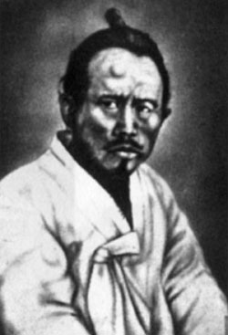
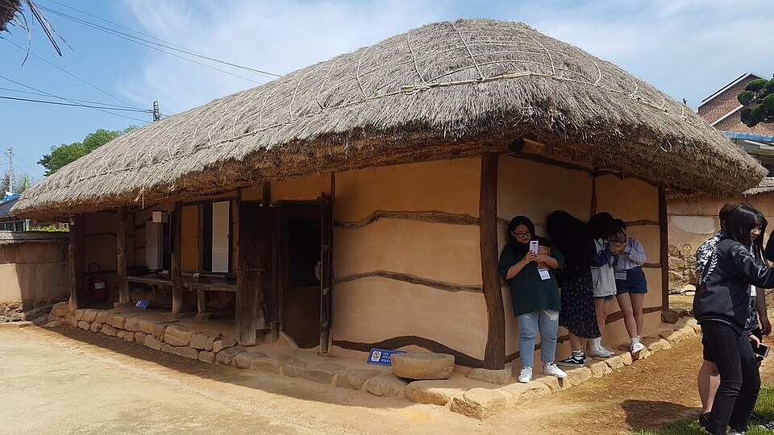
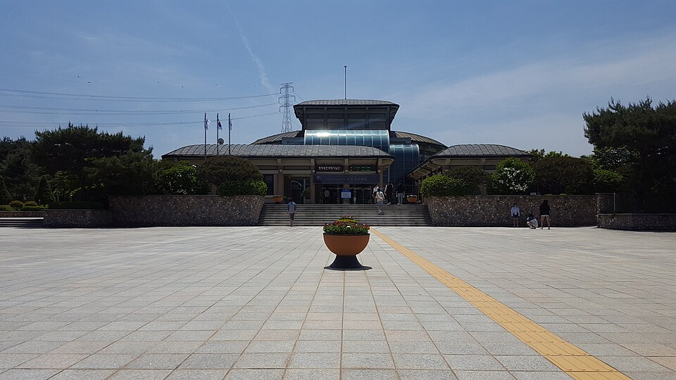

⏱️ 10초 카드 · 동학 농민운동 (1855~1895)
녹두장군동학·인내천우금치
여는 질문 — 진 싸움도 역사를 바꿀 수 있을까?
이름
한국어전봉준
원어全琫準
실제 발음전봉준
로마자Jeon Bongjun
영어권Jeon Bong-jun (Green Pea General)
별칭녹두장군
왜 이 사람인가
이 도감에서 전봉준은 '아래로부터의 역사'를 보여 줘요. 왕과 외교관들이 나라의 위기를 위에서 다룰 때, 굶주린 백성은 스스로 일어섰죠. '사람이 곧 하늘'이라는 동학의 가르침을 들고요. 그 봉기는 우세한 일본군에 진압됐지만, '백성이 주인'이라는 외침은 사라지지 않고 훗날 독립운동과 민주주의로 이어졌어요. 패배한 싸움의 힘을 묻게 하는 인물이에요.
생애
키가 작아 '녹두장군'이라 불렸어요. 굶주리고 억눌린 백성을 위해 일어선 동학 농민운동(1894)의 지도자예요.
고부 군수의 학정에 맞서 봉기한 그는, 부패한 관리와 나라를 넘보는 외세(일본)에 맞선 농민들의 외침을 이끌었어요. '사람이 곧 하늘'이라는 동학의 가르침이 그 바탕에 있었지요.
봉기는 우금치 전투에서 우세한 무기를 가진 일본군에 진압되었고, 그는 체포되어 1895년 처형됐어요. 하지만 '백성이 주인'이라는 그 정신은 이후 독립운동으로 이어졌답니다.
자료로 보기 — 유묵·사진



남긴 말
“사람이 곧 하늘이다 (人乃天).”
전봉준과 농민군이 받든 동학의 핵심 가르침 — 신분을 넘어 모든 사람이 존귀하다는 생각이에요. · 출처: 동학 사상(인내천) — 그가 따른 가르침
“내가 한 일은 모두 백성을 위하고 나라를 위한 것이었다.”
체포된 뒤 재판(공초)에서 봉기의 뜻을 밝히며 — 그는 끝까지 당당했어요. · 출처: 전봉준 공초(취조 기록)의 요지
연표
- 1855출생
- 1894.1고부 봉기 → 동학 농민운동으로 확산
- 1894.11우금치 전투 패배
- 1895체포 후 처형
생애의 길 — 고부에서 우금치, 그리고 서울 🗺️
고을의 봉기에서 전주성 점령으로, 그리고 우금치의 패배로. 번호를 차례로 눌러 보세요.
현재 지도 위 경로예요. 호남의 작은 고을에서 시작된 외침이 충청을 거쳐 서울로 끌려가며 끝났지만 — 마지막 화살표가 향한 곳에서 그의 이야기는 노래가 되어 다시 시작됐어요.
빛과 그림자봉기는 실패했지만, 백성이 스스로 주인이 되려 한 그 외침은 헛되지 않았어요. 패배한 싸움도 역사를 움직일 수 있다는 걸 보여줘요.
더 깊이 (고등·일반)
녹두장군 — 작은 키, 큰 외침
전봉준은 키가 작아 '녹두(작은 콩)장군'이라 불렸어요. 시골 마을의 가난한 선비였던 그는, 굶주리고 억눌린 백성의 처지를 누구보다 잘 알았죠. 1894년 고부 군수 조병갑의 가혹한 수탈에 맞서 농민들과 함께 일어선 것이, 거대한 동학 농민운동의 시작이었어요.
참고: 전봉준의 생애·고부 봉기 일반
두 개의 적 — 부패한 관리와 외세
농민군이 맞선 상대는 둘이었어요. 하나는 백성을 쥐어짜는 부패한 관리들, 또 하나는 나라를 넘보는 외세(특히 일본)였죠. 농민군은 한때 전주성을 점령하고 '집강소'라는 자치 기구를 두어 스스로 고을을 다스리기도 했어요 — 백성이 직접 정치에 참여한, 우리 역사에서 드문 장면이었죠.
참고: 동학 농민운동·집강소 일반
우금치 (1894) — 화력 앞의 패배
농민군은 죽창과 화승총으로 싸웠지만, 공주 우금치에서 신식 소총과 기관총으로 무장한 일본군과 조선 관군을 만났어요. 며칠에 걸친 처절한 전투 끝에 수많은 농민이 쓰러졌고, 봉기는 사실상 무너졌죠. '용기'만으로는 메울 수 없는 '무기의 격차'가 그 시대의 냉혹한 현실이었어요.
참고: 우금치 전투(1894) 일반
죽음, 그리고 이어진 정신
전봉준은 옛 부하의 밀고로 체포되어 1895년 서울에서 처형됐어요. 그러나 재판에서도 그는 봉기의 뜻을 당당히 밝혔고, 끝까지 동지들을 팔지 않았죠. '백성이 주인'이라는 그 정신은 의병운동과 3·1운동, 그리고 먼 훗날의 민주주의로까지 흘러갔어요.
참고: 전봉준의 최후·동학의 유산 일반
'새야 새야 파랑새야' — 노래로 남은 녹두
전봉준이 죽은 뒤, 백성들은 '새야 새야 파랑새야, 녹두밭에 앉지 마라'라는 노래를 불렀어요. 녹두꽃(전봉준)이 떨어지면 백성(청포장수)이 운다는 슬픈 노래죠. 역사책이 아니라 입에서 입으로 전해진 이 노래가, 백성이 그를 어떻게 기억했는지를 가장 잘 말해 줘요.
참고: 민요 '새야 새야 파랑새야' 일반
사람의 그물 — 함께 읽을 인물
이 인물이 나오는 이야기
더 공부하기 — 여기서 출발하세요
📜 1차 사료
- 전봉준 공초 (취조 기록)체포된 전봉준이 봉기의 뜻을 직접 밝힌 기록.
🎬 영상으로
- KBS 〈동학농민혁명 — 갑오년의 노래〉 ↗🟢 KBS 로드 다큐 — 1894년 농민군의 길을 따라가요(한국어).
📍 가 볼 곳
- 동학농민혁명기념관 (정읍)봉기가 시작된 고장에 세워진 기념관.
- 우금치 전적지 (공주)농민군이 마지막으로 싸운 고개 — 위령탑이 있어요.